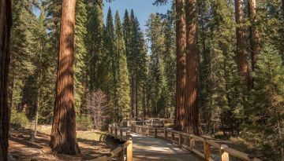

| Sequoia y Kings Canyon
Bosque de los gigantes (Giant Forest)
Sierra Nevada de California, Estados Unidos
El lema de la secuoya gigante: "Hazte grande o vete a casa"
El Bosque de los gigantes, llamado así por el naturalista John Muir en 1875, cuenta con la más impresionante colección de secuoyas gigantes de todo el Parque Nacional Sequoia y Kings Canyon. Entre las 8,000 secuoyas gigantes, la General Sherman, es el ser vivo más grande del planeta por su volumen, y anfitrión de árboles menos famosos, pero igualmente impresionantes.
Para poder apreciar por completo la majestuosidad arquitectónica que poseen, camina entre ellos. Pero primero, oriéntate en el Museo Giant Forest, diseñado por el mismo arquitecto detrás del Majestic Yosemite Hotel (antes conocido como Ahwahnee) en Yosemite Valley. Desde aquí, anda por cómodos senderos (aptos para sillas de ruedas), que incluyen los caminos Big Trees Trail y el General Sherman Tree Trail. Pide que te indiquen cómo llegar a Moro Rock y a la encantadora Crescent Meadow, donde encontrarás Tharp's Log, la morada de verano del ranchero Hale Tharp. Se cree que fue el primer hombre blanco en entrar al Bosque de los gigantes y construyó su hogar dentro de un tronco de secuoya hueco, marcado por el fuego y que vivió en él durante muchos veranos. En el camino a Crescent Meadow hay otro punto famoso para tomar fotografías: Tunnel Log, una secuoya caída y hueca por la que pueden pasar los automóviles.
|
| Parque Nacional de Erawan
Cascada de peces en el interior de la selva
Kanchanaburi, Tailandia Central
Kanchanaburi, está llena de leyendas y recuerdos, también cuenta con paisajes majestuosos que dan prueba de que la naturaleza es realmente sabia. Un lugar realmente mágico es el Parque Nacional de Erawan, este es un área protegida de 549,88 kilómetros, la cual fue inaugurada como parque en el año de 1975.Su principal atractivo son las Cascadas de Erawan. Su nombre hace referencia a un elefante blanco de 3 cabezas, que a veces puede tener 33, posee varios colmillos y pertenece a la mitología hindú. Se dice que una de las cascadas, la más grande, se asemeja a la cabeza de este especial animal. El parque cuenta con 7 niveles de cascadas, la más grande o de mayor altura se encuentra en el último nivel, las demás se asemejan a pequeños pero hermosos saltos con piscinas naturales rodeadas de gran vegetación. Estas famosas cataratas Erawan son de agua cristalina y quienes las visitan pueden bañarse en todas ellas.
Es posible pasar la noche en este lugar, para esto se pueden alquilar bungalows, cabañas pequeñas, o los más aventureros pueden rentar tiendas de campaña y sacos de dormir, además en el parque puede encontrar sitios donde comer. Cabe destacar, que el parque cuenta con 4 cuevas, las cuales se pueden explorar, ellas son la Mee Cave, de la cual se dice que estuvo ocupada por osos; la Ta Duang Cave, la cual contiene pinturas rupestres; Rua Cave, donde se hallaron ataúdes y por último, Pharthat Cave con 200 metros de longitud y a la que se puede acceder de forma más sencilla.
|
| El bosque de Paimpont
El bosque de Merlín, Broceliande
Ille y Vilaine, Bretaña francesa
30 kilómetros al suroeste de Rennes se encuentra el bosque más emblemático de Morbihan: el bosque de Paimpont. Se trata de un lugar impregnado de leyendas desde hace varios siglos. Según ellas, Merlín, el hada Viviana o los caballeros de la Mesa Redonda pisaron esta tierra. El bosque de Paimpont no es otro que el bosque de Brocéliande que aparece en las historias de Chrétien de Troyes. Explore el bosque en busca de sitios vinculados a personajes legendarios como la tumba de Merlín, la fuente de la Juventud y el Valle sin retorno. Para los curiosos y los conocedores, el Centro del Imaginario Artúrico, instalado en el castillo de Comper, en la ciudad de Concoret, le sumergirá directamente en la vida del Rey Arturo y su búsqueda del Grial, también puedes encontrar enclaves megalíticos como la tumba del Gigante o los menhires de Monteneuf. A pesar de su ingrata tierra en donde brotan la piedra y el esquisto rojo, hay árboles centenarios que han echado raíces… En la tierra y en la fértil imaginación de los habitantes de la región.
El bosque de Brocelianda se encuentra entre el Valle sin Retorno y El mirador de las Hadas. Son en total unas 7000 hectáreas a 30 km de la ciudad bretona de Rennes. Sus árboles y arroyos tienen un aire fantástico de los bosques de las novelas así como el musgo, las piedras y añosas hayas y robles. Algunos de ellos tienen unos 1000 años de antigüedad. Esta floresta además tiene numerosos rincones históricos que demuestran que este lugar lleva habitado desde hace unos 5000 años.Este bosque es uno de esos lugares para dejarse encandilar por la magia de la fantasía y las leyendas.
|

T R A B A J A M O S P A R A Q U E L O S A M A N T E S D E L A A V E N T U R A
~ E N C U E N T R E N S U L U G A R P E R F E C T O ~
|

| | |